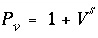
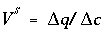
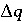
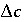
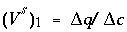
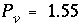
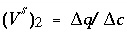
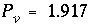

The following example of advective transport in the presence of a cation exchanger is derived from a sample calculation for the program PHREEQM (Appelo and Postma, 1993, example 10.13, p. 431-434). The chemical composition of the effluent from a column containing a cation exchanger is simulated. Initially, the column contains a sodium-potassium-nitrate solution in equilibrium with the cation exchanger. The column is then flushed with three pore volumes of calcium chloride solution. Calcium, potassium, and sodium react to equilibrium with the exchanger at all times. The problem is run two ways--by using the ADVECTION data block, which models only advection, and by using the TRANSPORT data block, which simulates advection and dispersive mixing.
The input data set is listed in table 30. The column has 40 cells to be consistent with one of the runs described by Appelo and Postma (1993). This requires that 40 solutions, numbered 1 through 40, be defined; the number of the solution corresponds to the number of the cell in a column. In this example, all cells contain the same solution, but this is not necessary. Solutions could be defined differently for each cell and could be defined by reactions in the current or preceding simulations (using the SAVE keyword). The definition of a solution for each cell is mandatory, but the definition of an exchanger for each cell is optional. The number of the exchanger corresponds to the number of the cell in a column, and if an exchanger is defined for a cell number, it is used in the calculations for that cell. In this example, an identical exchanger composition is prescribed for all cells.
The solution filling each of the 40 cells of the column is defined with the SOLUTION 1-40 data block. The infilling solution for the column must be defined as SOLUTION 0, and it is a calcium chloride solution. The amount and composition of the exchanger in each of the 40 cells is defined by the EXCHANGE 1-40 data block. The number of exchange sites in each cell is 1.1 mmol, and the initial composition of the exchanger is calculated such that it is in equilibrium with solution 1. Note that the initial exchange composition is calculated assuming that the composition of solution 1 is fixed; the composition of solution 1 is not changed during the initial exchange-composition calculation.
The ADVECTION data block need only include the number of cells and the number of shifts for the simulation. The calculation only accounts for numbers of pore volumes that flow through the cells, no explicit definition of time or distance is used. The identifiers -punch_cells and -punch_frequency specify that data will be written to the selected-output file for cell 40 at each shift. The identifiers -print_cells and -print_frequency indicate that data will be written to the output file for cell 40 every 20 shifts.
The SELECTED_OUTPUT data block specifies that the shift (or advection step number) and the total dissolved concentrations of sodium, chloride, potassium, and calcium will be written to the file ex11adv.sel . Pore volumes can be calculated from the shift number; one shift moves a solution to the next cell, and the last solution out of the column. PHREEQC calculates cell-centered concentrations, so that the concentrations in the last cell arrive a half shift later at the column end. In this example, one shift represents 1/40 of the column pore volume. The number of pore volumes ( PV ) that have been flushed from the column is therefore PV = (number of shifts + 0.5) / 40. The number of pore volumes is calculated and printed to the selected-output file using the USER_PUNCH data block.
Following the advection calculation ( ADVECTION), the initial conditions are reset for the advection and dispersion calculation ( TRANSPORT) with a second set of SOLUTION and EXCHANGE data blocks. SOLUTION 0 is unchanged by the ADVECTION simulation and need not be redefined. The TRANSPORT data block includes a much more explicit description of the transport process than the ADVECTION data block. The length of each cell ( -length), the boundary conditions at the column ends ( -boundary_cond), the direction of flow ( -flow_direction), the dispersivity ( -dispersivity), and the diffusion coefficient ( -diffc) can all be specified. The identifier -correct_disp should be set to true when modeling outflow from a column with flux boundary conditions. The identifiers -punch, -punch_frequency, -print, and -print_frequency serve the same function as in the ADVECTION data block. The second SELECTED_OUTPUT data block specifies that the transport step (shift) number and total dissolved concentrations of sodium, chloride, potassium, and calcium will be written to the file ex11trn.sel . The USER_PUNCH data block from the advection simulation is still in effect and the pore volume at each transport step is calculated and written to the selected-output file.
Table 30. --Input data set for example 11
TITLE Example 11.--Transport and ion exchange.
SOLUTION 0 CaCl2
units mmol/kgw
temp 25.0
pH 7.0 charge
pe 12.5 O2(g) -0.68
Ca 0.6
Cl 1.2
SOLUTION 1-40 Initial solution for column
units mmol/kgw
temp 25.0
pH 7.0 charge
pe 12.5 O2(g) -0.68
Na 1.0
K 0.2
N(5) 1.2
EXCHANGE 1-40
equilibrate 1
X 0.0011
ADVECTION
-cells 40
-shifts 120
-punch_cells 40
-punch_frequency 1
-print_cells 40
-print_frequency 20
SELECTED_OUTPUT
-file ex11adv.sel
-reset false
-step
-totals Na Cl K Ca
USER_PUNCH
-heading Pore_vol
10 PUNCH (STEP_NO + .5) / 40.
END
SOLUTION 1-40 Initial solution for column
units mmol/kgw
temp 25.0
pH 7.0 charge
pe 12.5 O2(g) -0.68
Na 1.0
K 0.2
N(5) 1.2
EXCHANGE 1-40
equilibrate 1
X 0.0011
TRANSPORT
-cells 40
-length 0.002
-shifts 120
-time_step 720.0
-flow_direction forward
-boundary_cond flux flux
-diffc 0.0e-9
-dispersivity 0.002
-correct_disp true
-punch 40
-punch_frequency 1
-print 40
-print_frequency 20
SELECTED_OUTPUT
-file ex11trn.sel
-reset false
-step
-totals Na Cl K Ca
END
Figure 11. --Results of transport simulation of the replacement of sodium and potassium on a cation exchanger by infilling calcium chloride solution. Lines display concentrations at the outlet of the column as calculated with PHREEQC with advection only ( ADVECTION keyword) and with advection and dispersion ( TRANSPORT keyword).
The results for example 11 using ADVECTION and TRANSPORT keywords are shown by the curves in figure 11. The concentrations in cell 40, the end cell, are plotted against pore volumes. The main features of the calculations are the same between the two transport simulations. Chloride is a conservative solute and arrives in the effluent at about one pore volume. The sodium initially present in the column exchanges with the incoming calcium and is eluted as long as the exchanger contains sodium. The midpoint of the breakthrough curve for sodium occurs at about 1.5 pore volumes. Because potassium exchanges more strongly than sodium (larger log K in the exchange reaction), potassium is released after sodium. Finally, when all of the potassium has been released, the concentration of calcium increases to a steady-state value equal to the concentration in the infilling solution.
The concentration changes of sodium and potassium in the effluent form a chromatographic pattern, which often can be calculated by simple means (Appelo, 1994b). The number of pore volumes needed for the arrival of the sodium-decrease front can be calculated with the formula  , where  ,  indicates the change in sorbed concentration (mol/kgw), and  the change in solute concentration over the front. The sodium concentration in the solution that initially fills the column is 1.0 mmol/kgw and the initial sorbed concentration of sodium is 0.55; the concentration of sodium in the infilling solution is zero, which must eventually result in 0 sorbed sodium. Thus,  = (0.55 - 0)/(1 - 0) = 0.55 and  , which indicates that the midpoint of the sodium front should arrive at the end of the column after 1.55 pore volumes.
Next, potassium is displaced from the exchanger. The concentration in solution increases to 1.2 mmol/kgw to balance the Cl - concentration, and then falls to 0 when the exchanger is exhausted. When potassium is the only cation in solution, it will also be the only cation on the exchanger. For potassium,  = (1.1 - 0)/(1.2 - 0) = 0.917 and  pore volumes. It can be seen that the front locations for ( V s ) 1 and ( V s ) 2 are closely matched by the midpoints of the concentration changes shown in figure 11.
The differences between the two simulations are due entirely to the inclusion of dispersion in the TRANSPORT calculation. The breakthrough curve for chloride in the TRANSPORT calculation coincides with an analytical solution to the advection dispersion equation for a conservative solute (Appelo and Postma, 1993, p. 433). Without dispersion, the ADVECTION calculation produces a square-wave breakthrough curve for chloride. The characteristic smearing effects of dispersion are absent in the fronts calculated for the other elements as well, although some curvature exists due to the effects of the exchange reactions. The peak potassium concentration is larger in the ADVECTION calculation because the effects of dispersion are neglected.